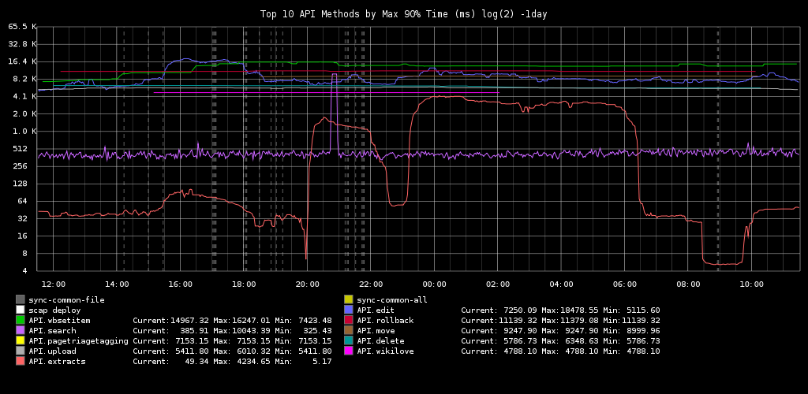
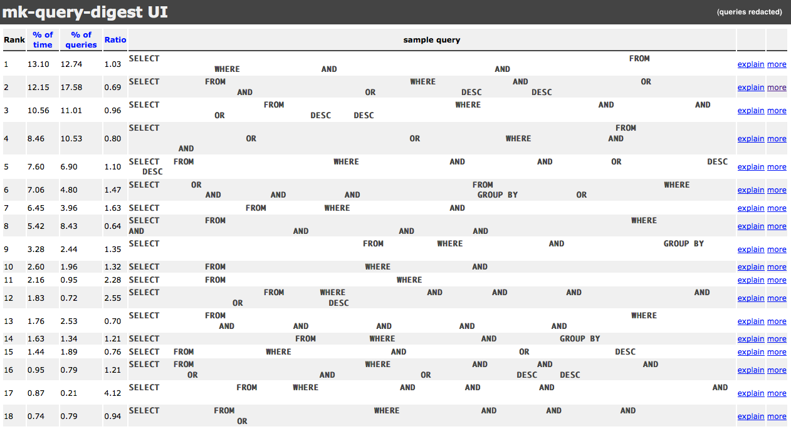

Gestion de charge
@Wikimedia.org
PHP Tour 2012, Nantes, France
[[User:Hashar|Antoine Musso]]
Talk is in French.
English speakers are welcome to come see me after the talk (tip: I love beer)
Wikimedia Foundation
A but non lucratif
Financé par NOS dons
Mission: diffuser les connaissances


Chiffres clés
Visiteurs: ~ 500 000 000
285 langues supportées
~ 24 millions d'articles
Employés: ~ 140
Budget: ~ $30M
http://wikimediafoundation.org/wiki/Key_facts
Scaling - 2003
Au début un serveur: pliny
Puis séparation DB:
pliny : MySQL
larousse : le reste (Apache, DNS, IRC...)
Commande de matériel fin 2003 : + 8 serveurs
2004 ... 2012
Nos "ennemis":
475M utilisateurs +
Solutions
Partage de charge généralisé
Eviter le language dynamique (PHP/LUA)
== rendus en cache
... ou optimiser:
/** kills the servers :-(
$f = slow_code();
*/Frontend caching
Geo DNS vers un des datacenter
LVS frontal
Varnish + hash par URL
Total: 150 000 req/s
Non cachées: 10 000 req/s
Ratio 14/1 :)
Frontend caching
Séparation des caches:
bits.wikimedia.org → favicon, CSS, JavaScript
upload.wikimedia.org → images & videos
*.wikipedia.org → HTML
Ex: bits a tout en mémoire
Optimisations specifiques au streaming
Backend caching
~ 10 000 req/s
MediaWiki s'occupe donc du reste et dispose de caches spécialisés
Quelques uns en exemples...
MediaWiki - APC
1) Cache opcode : attention à la taille du cache! Plusieurs versions de MediaWiki déployées.
invalidation = parsing du .php = slow = dead site
2) Système de mémoire partagée : nous avons trop de données à y mettre :(
MediaWiki - mémoire partagée
Memcached : base clé/valeur en mémoire et répartie sur différents serveurs
API MediaWiki:
$key = wfMemcKey( 'class', 'func', 'role' );
$champs = $wgMemc->get( $key );
^^^
if( !$champs ) {
/** opération très longue ... */
$wgMemc->set( $key, $RESULTAT, 3600 * 24 );
^^^
}MediaWiki - process cache
Propriété statique:function getStats() {
static $stats = null;
if( is_null( $stats ) ) {
/** opération très longue fstat(), fopen()..*/
$stats = $RESULTAT;
}
return $stats;
}$ProcessCache = new HashBagOStuff();
# Interface identique à celle de Memcached:
$ProcessCache->set( wfMemcKey('something'), $RESULTAT );MediaWiki - cache en DB
Trop de données / persistance$hugeCache = ObjectCache::getInstance( CACHE_DB );
^^^^^^^^
# Interface identique à celle de Memcached:
$hugeCache->set( wfMemcKey('something'), $RESULTAT );Utilisé pour les conserver les données du parser.
~ 250 millions enregistrements
Problème memcached
$srv= crc32(clé) % count( $servers );
^^^^^^^^^^^^^^^^^
Donc difficile d'ajouter / retirer des serveurs
Données volatiles :-/
Peu d'espace (1.3TB)
Problème du cache en database
Une seule base : SPOF
Absence de LRU:
disque plein = crash = cache vide :-D
Commun à memcache
- Latence réseau :(
- Difficile de répliquer entre DC
DB distribution
MediaWiki a son propre système de load balancing
# DB assignée à un cluster
array( 'enwiki' => 'clust1' );
# Chaque cluster à un maitre (load = 0) et un ou plusieurs esclaves:
array(
'clust1' => array( 'db63' => 0, 'db59' => '400' ),
'DEFAULT' => array( 'db34' => 0, 'db64' => '200', 'db11' => '400' ),
);Pas de sharding (= DB réparties sur plusieurs serveurs)
DB distribution
Utilisation:# DB assignée à un cluster
$wgDBname = 'enwiki';
$write = wfGetDB( DB_MASTER ); // connecté à db63
$write->insert( 'table', array('id'=>3) );
^^^^^^
$wgDBname = 'frwiki';
$read = wfGetDB( DB_SLAVE ); // connecté à db64 ou db11
$read->select( 'table', '*', array('id'=>3) );
^^^^^^DB dédiée
Par tâches arbitrairement déterminée:array( 'enwiki' => array('contributions' => 'db36') );
$wgDBname = 'enwiki';
wfGetDB( DB_SLAVE, 'contributions' );array( 'external24' => array(
'10.0.0.1' => 1, '10.0.0.2' => 3, '10.0.0.3' => 3 ) );
$lb = $repo->getSlave( 'external24' );
$lb->insert( /* id, texte zippé */ );Fil d'attente
slow ? => async()
foreach( $titles as $title ) {
$jobs[] = new DoubleRedirectJob( $title );
}
Job::batchInsert( $jobs );
while true; do
php maintenance/runJobs.php;
sleep 10;
done;
journaux et surveillance
Sans données, impossible d'optimiser.
prod >>>> dev
Profiling PHP
| name | count | cpu% | cpu/c | real% | real/c |
| PPFrame_DOM::expand | 114815074353 | -3.47 | 1.69 | 176 | 1.84 |
| Parser::braceSubstitution | 21806727167 | -2.91 | 7.47 | 147 | 8.04 |
| -total | 507299898 | 100 | -1.1e+04 | 100 | 235 |
| MediaWiki::main | 301305249 | 277 | -5.14e+04 | 71.9 | 285 |
| MediaWiki::performRequest | 278258642 | 277 | -5.57e+04 | 52.6 | 226 |
| Parser::braceSubstitution-pfunc | 20072121945 | -0.847 | 2.36 | 42.4 | 2.53 |
| MediaWiki::performAction | 193131533 | -0.641 | 186 | 37.2 | 230 |
| Parser::internalParse | 730328447 | -0.71 | 54.4 | 35.9 | 58.8 |
| Parser::parse | 596950291 | -0.658 | 61.7 | 33.7 | 67.5 |
| Parser::replaceVariables | 4700368966 | -0.593 | 7.06 | 30.3 | 7.71 |
| Article::view | 158010708 | -0.5 | 177 | 26.8 | 203 |
| Parser::braceSubstitution-setup | 21806662227 | -0.472 | 1.21 | 24.1 | 1.32 |
| api.php | 212911870 | -0.234 | 61.4 | 19.3 | 108 |
Filtres: preprod, branche de prod, regroupement fonctionel
http://noc.wikimedia.org/cgi-bin/report.pyFutur: facebook/xhprof
Code pour profiler
function slowHorse() {
wfProfileIn( __METHOD__ );
wfProfileIn( __METHOD__ . '-pass1' );
// Plein de code lent
wfProfileOut( __METHOD__ . '-pass1' );
wfProfileIn( __METHOD__ . '-pass2' );
// Encore du code lent
wfProfileOut( __METHOD__ . '-pass2' );
wfProfileOut( __METHOD__ );
}Permet de récupérer un arbre d'appel voir de l'analyser avec Valgrind.
Sauvegardé en base de données
Classe API, top 10 / max 90% time sur un jour
 https://gdash.wikimedia.org/ (public)Profile SQL
pt-query-digest analyse les logs MySQL.
Permet de produire des rapports de performances / nombre de requêtes...
http://www.percona.com/software/percona-toolkit
Ishmael
Interface graphique pourpt-query-digest

https://github.com/mihasya/ishmael
Installationmatériel
matériel
Installer rapidement
- racker + installer la distrib
- indiquer le nom de la machine
- brancher le réseau
puppetd -tv- Success!
puppet
node /mw[0-9]+\.pmtpa\.wmnet/ {
include role::applicationserver::appserver
}question.php
$Public->setTimeout( '10 minutes' );
do {
$question = $Public->getQuestion();
try {
self::answer( $question );
} catch( TooComplicated( $e ) {
continue;
}
} while( $question );
echo 'hashar' . chr(64) . 'free.fr';